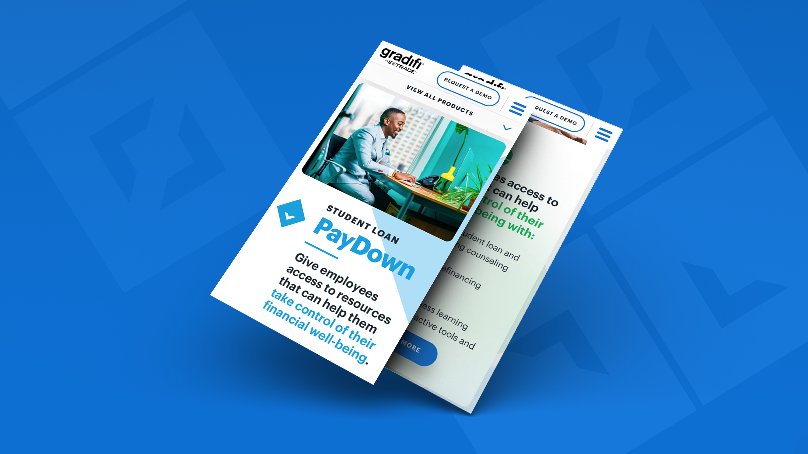
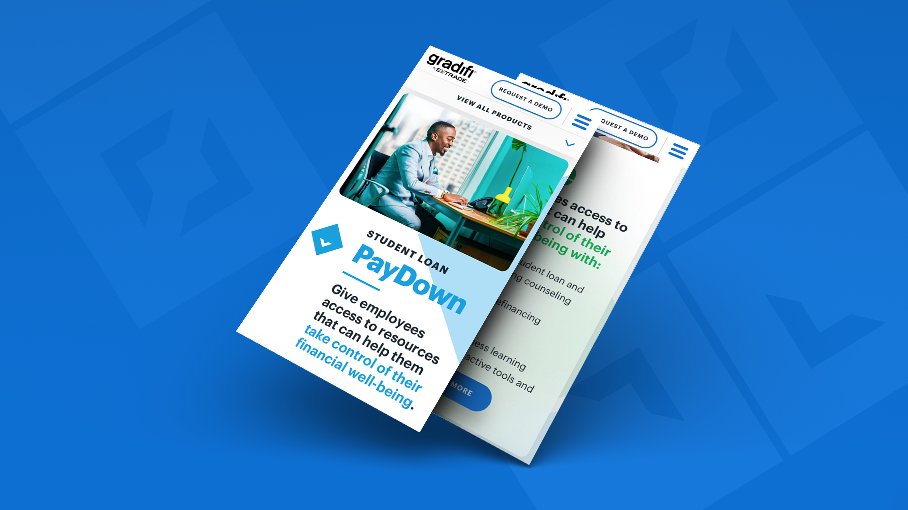

Gradifi Solutions
Gradifi Solutions, recently acquired by Morgan Stanley, offers a suite of workplace financial solutions that help employees understand and improve their financial standing.
Tasked with updating the Gradifi site to better communicate the benefits offered by the brand, I worked with my team to design new UI screens. My primary focus was to create a visual identity and explanatory page for each of Gradifi's products, making the mobile design of the site a top priority.
 
